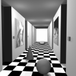
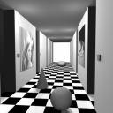
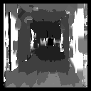
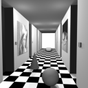
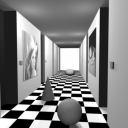
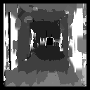
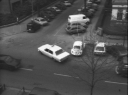
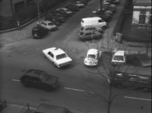
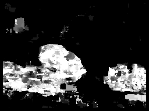

 
your result (i.e. the disparity map) should ideally like this:

although it is more likely to be more crude - like the following, which was generated using a window of 10x10 and a maximum allowed disparity of 8 pixels in any direction:

Write a stereo algorithm to compute a disparity (depth) map using correlation. For each window in the left image perform correlation in the right image, and find the translation that maximises correlation.
For example, given the following left and right synthetic stereo image pair


your result (i.e. the disparity map) should ideally like this:
although it is more likely to be more crude - like the following,
which was generated using a window of 10x10 and a maximum allowed disparity of 8 pixels in any direction:

You can use the same program to compute optic flow (i.e. motion between image frames).
Try it out on
frame 1 and frame 8
from the famous Hamburg taxi sequence:


This a disparity map generated using correlation

but the flow vectors (not shown) are also easily derived.